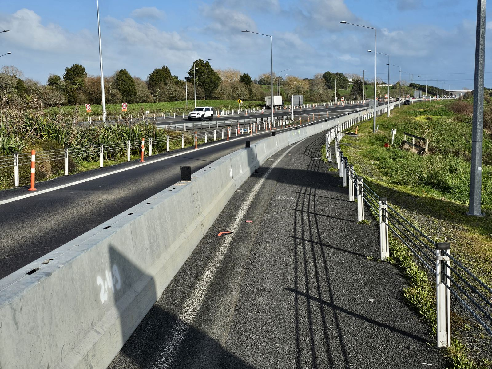
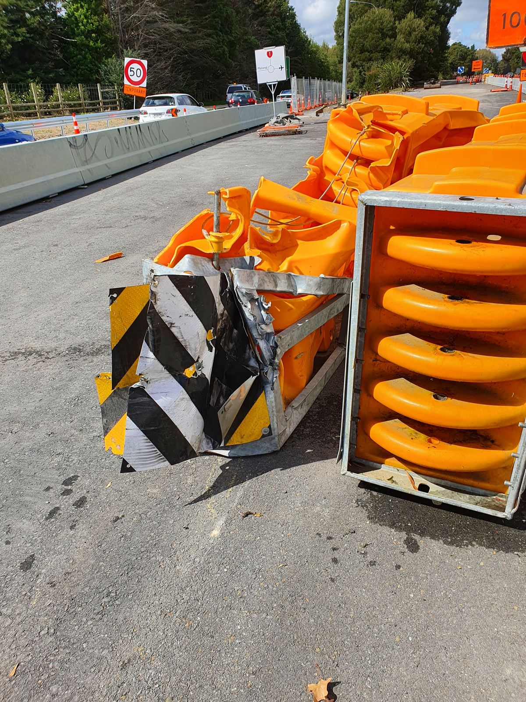

Compare a barrier in good condition against one that needs to be reported. Switch between the two below.
1 of 2 viewed — click each tab

Units are aligned and sitting level
Linking pins fully connected
Water-filled units full to the correct level
No visible cracks or impact marks

Unit tilted or knocked out of alignment
Linking pin disconnected or missing
Water level low — reduced stability
Visible impact damage or cracking
Both conditions reviewed.
IF YOU SEE THIS
If you notice any of the damage signs: stop work in the area, do not attempt to repair or reposition it yourself unless trained and authorised, cordon off the area if it's safe to do so, and report it immediately to your supervisor or site traffic management coordinator.
Damaged or Displaced Barriers.
Compare a barrier in good condition against one that needs to be reported. Switch between the two tabs below.
A barrier in good condition has units aligned and sitting level, linking pins fully connected, water-filled units full to the correct level, and no visible cracks or impact marks.
A damaged barrier that needs reporting may be tilted or knocked out of alignment, have a disconnected or missing linking pin, a low water level with reduced stability, or visible impact damage or cracking.
If you notice any of the damage signs: stop work in the area, do not attempt to repair or reposition it yourself unless trained and authorised, cordon off the area if it's safe to do so, and report it immediately to your supervisor or site traffic management coordinator.